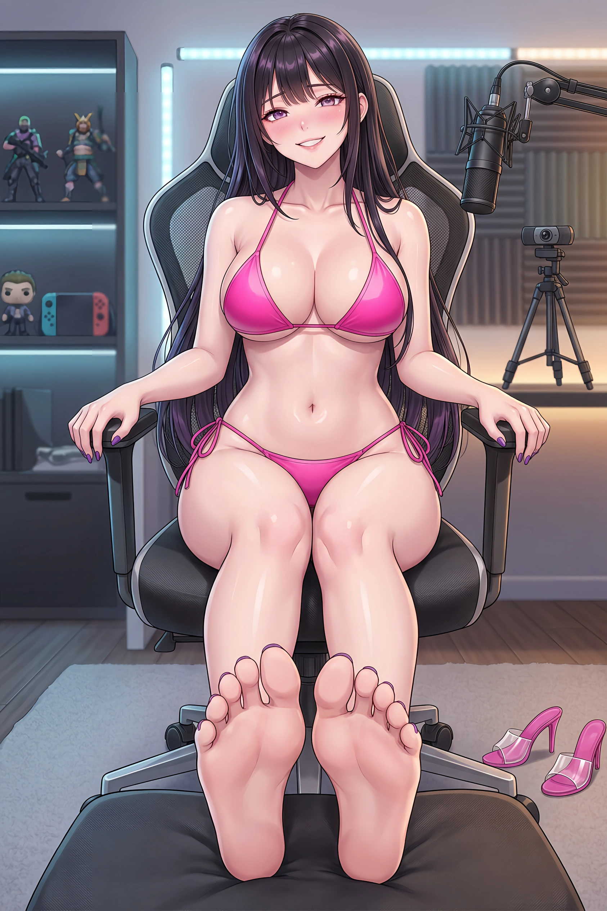
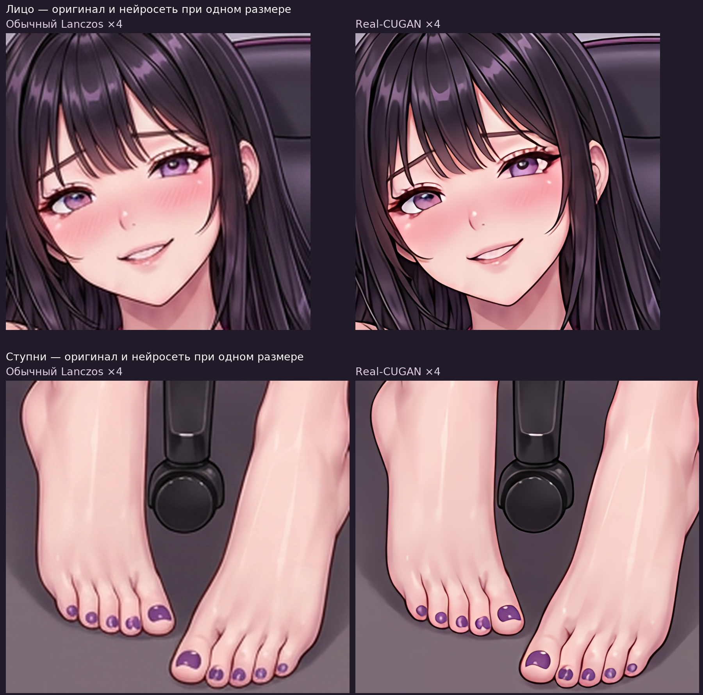
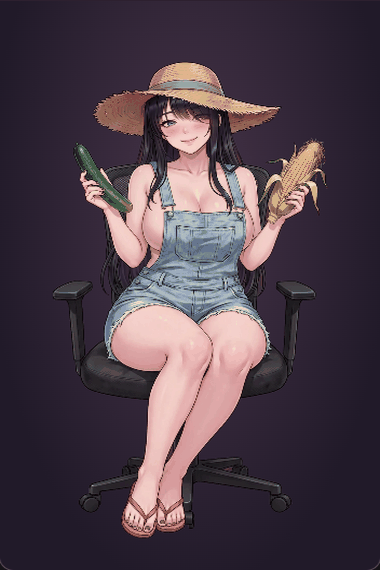

ПРОВЕРЕНО
Локальная деформация
Интерактивный тест выше. Дыхание, отклик груди и ступней на новом кадре. Не является отдельным скелетным ригом.
01 / ЖИВОЙ ПЕРСОНАЖ
Отдельный арт и честное сравнение подходов к анимации. Пробуй движения, меняй силу и рассматривай детали на своём телефоне.
Это лаборатория, не обновление игры.
Новый рисунок ещё не утверждён. Оригинальная игра и арты сохранены.

Новый кадр создан в 843 × 1264. Real-CUGAN увеличил его до 3372 × 5056, затем экранная версия уменьшена до 1686 × 2528. Модель может менять мелкие детали — это не исходная генерация в 5K.

Интерактивный тест выше. Дыхание, отклик груди и ступней на новом кадре. Не является отдельным скелетным ригом.
На другом кадре отделяли руку с огурцом с помощью GrabCut. Фон дорисован приблизительно, возможны швы.

Качество, стыки слоёв и реакция кресла требуют визуальной проверки. Ни один из тестов не является готовой анимацией всех поз игры.